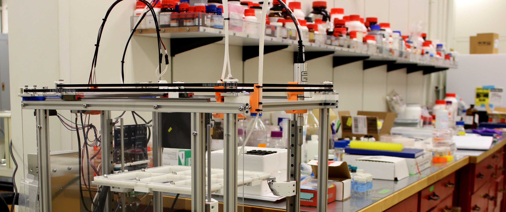
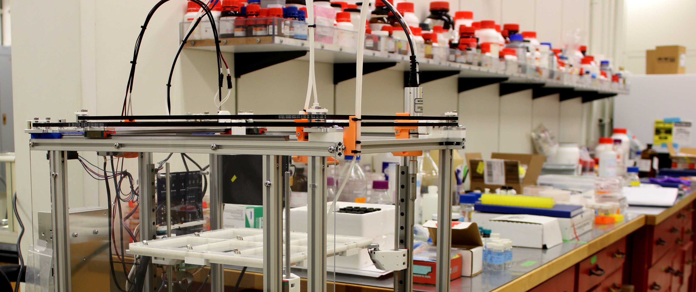

POSE!
 

 University of Washington
University of Washington
April 26, 2024
Okay, I know what a Jubilee is. How do I use it?
Duckbot
A Jubilee outfitted with tools and associated control software for handling duckweed
Controlling Jubilee (with code)
pipette.transfer(
vol=100,
source_well = source["A1"],
destination_well = dest["A1"]
mix_after = (50, 3)
)
Controlling Jubilee
m = Machine()
m.pickup_tool(camera)
camera.image_wells(well_plate["A"])
if growth_rate < threshold:
do other things!
Workshop Activities!
Today: Build a pipette tool

https://github.com/machineagency/POSE-workshop
Workshop Activities!
Tomorrow: Challenges!
https://github.com/machineagency/POSE-workshop
POSE!
University of Washington
April 26, 2024